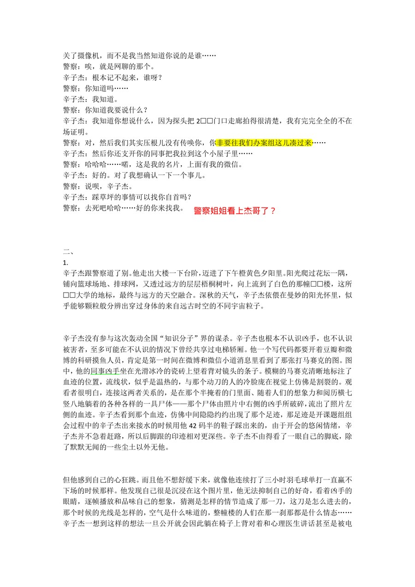

展柜VITRINE
这里放的不是文章，是文章之前和之后的东西：一部小说的七稿与四位读者的批注，一本写在比什凯克的英文小册，一些论文、专利和影像。它们不按栏目分，按做出来的时间摆在一起。
青年讲师M·贺六浑 · 一个虚构的故事
2021.11—12 · 七稿 · 未刊一所顶尖高校。一场震动学术界的谋杀。一个才华横溢但心生疲倦的青年讲师。他坐在课题组组会里，几个小时，他拿着刀出现在实验室。
Z：我们先走个流程，做下笔录，你说的和我们讲的都会在这个东西里记录。
辛子杰：好的，警官。
Z：说话说得响一点。否则可能录音不到位会要你重说。
辛子杰：咳咳……好的。
Z：姓名？
辛子杰：辛子杰。
“每个人在自己的角度都没有错，但大家聚在一起就拉开悲剧的序幕。”《写作目的与致谢》，2021.12.11
十一月，十三份分日手稿；十二月，二稿到七稿。四位读者在 PDF 和 Word 里留下了 302 处批注与修订。

读者 C，2021.12.02。
版本 / 二稿至七稿
从 3.1 万写到 3.5 万，后两稿又删回去。
旧题：《课题组谋杀嫌疑犯》→《讲师陶吕之死》→《课题组之死》→《青年讲师》
“？？？这转变太突然了”读者 A · PDF 批注 · 12.05
“警察姐姐看上杰哥了？”读者 C · PDF 批注 · 12.02
“作者的构思非常巧妙，文本、现实、梦境、自己、女友等视角不断切换交织”读者 D · Word 修订 · 12 月
四幅图版PLATES
2025.06 · 比什凯克 · 石刻


A Preliminary Mathematical Exegesis of Diffusion Models
扩散模型的一个初步数学阐释 · Gaining Clarity From True Understanding
“The math is precise by my best, but I hope it feels more like following a story than reading a textbook.”Preface
- 序 Preface 829
- I The High-Dimensional Structure of True Data 3,868
- II The ELBO Paradigm 3,150
- III Dissecting the ELBO 11,234
- IV Implementation on machine 1,170
“Nothing’s introduced without context, and no idea exists just for show.”
— Preface
论文与影像RECORD
30 篇 · 8 项专利 · 35 条2024TREB: a BERT attempt for imputing tabular data imputation3
2024A Novel Metric-Based Geometric Parameterization Approach with Performance Filtration1
2023A Brief Summary of Prompting in Using GPT Models17
2023A Preliminary Attempt of Deploying AIGC in Autodriving Scenario Generation: Via LLM3
2023Application of “Objective Space Filtration” on Nacelle Cowl Design Variable Generation1
2022Framework of nacelle inverse design method based on improved generative adversarial networks36
2022Nacelle Inlet Optimization at High Angles of Attack Based on the Ensemble Indicator Method4
2021Multi-Objective Optimization of Cascade Blade Profile Based on Reinforcement Learning41
2021A nacelle inlet design approach with more three-dimensional geometric consideration18
2021人工智能在气动设计中的应用与展望11
2021Modifications of class-shape transformation driven by aerodynamic concerns over leading-edge region4
2021A new moving mass control method for fluid structure interaction problems1
2020The Objective Space and the Formulation of Design Requirement in Natural Laminar Flow Optimization10
2019A review of the artificial neural network surrogate modeling in aerodynamic design190
2019Natural Laminar Flow Optimization of Transonic Nacelle Based on Differential Evolution Algorithm12
2019Laminar Transition over Airfoil: Numerical Simulation of Turbulence Models and Experiment Validation4
2018A PCA–ANN-based inverse design model of stall lift robustness for high-lift device33
2018Database self-expansion based on artificial neural network: An approach in aircraft design33
2015Artificial neural network based inverse design: Airfoils and wings130
2014基于人工神经网络的机翼外形预测